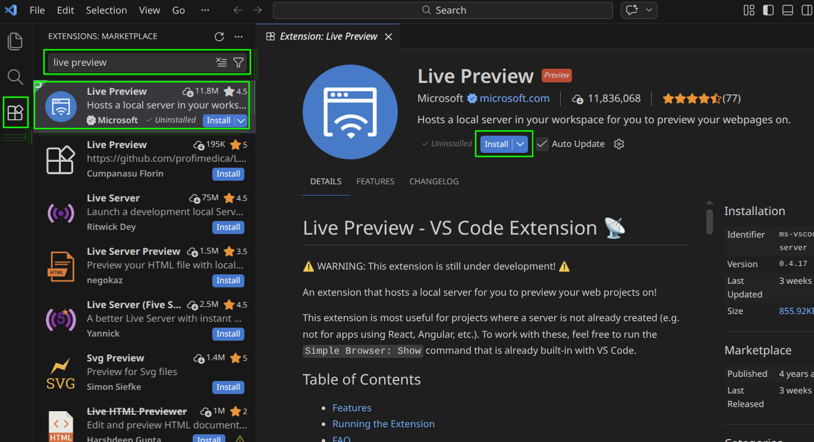

Live Preview
Live Preview is a VSCode extension that lets you see changes to your static website in real time.
Installing
- Open VSCode
- Open the Extensions tab (Ctrl + Shift + X)
- Search for
Live Preview - Verify the extension is owned by
Microsoft - Click the
Installbutton

Usage
TODO..